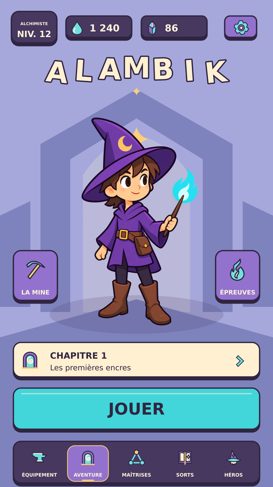
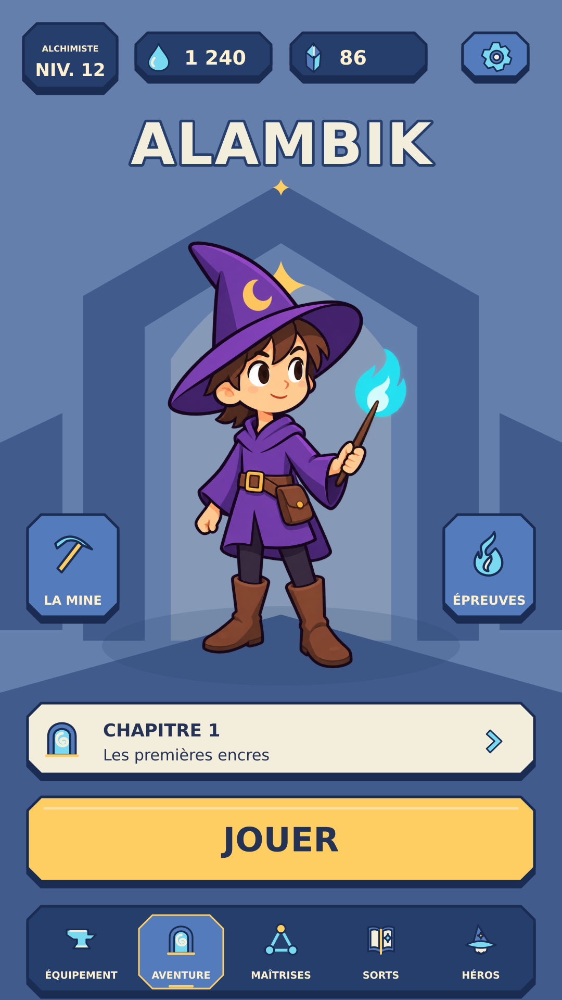
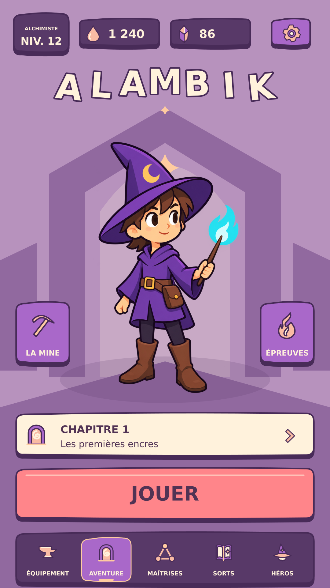
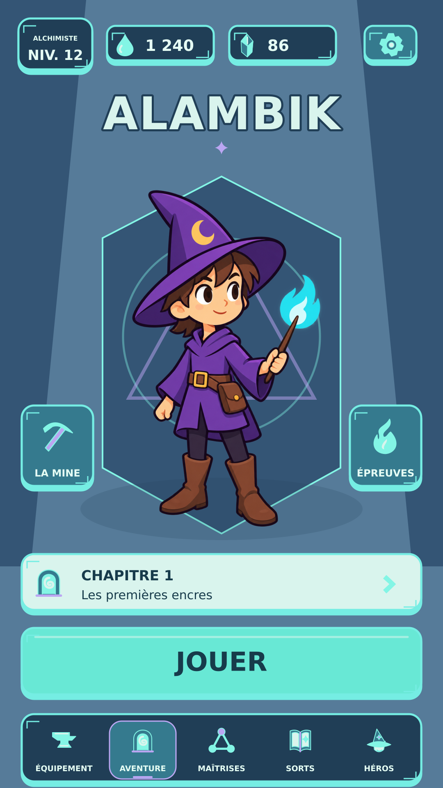
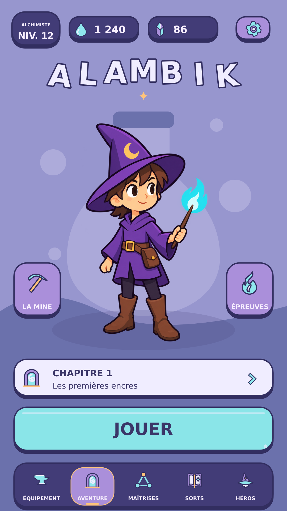
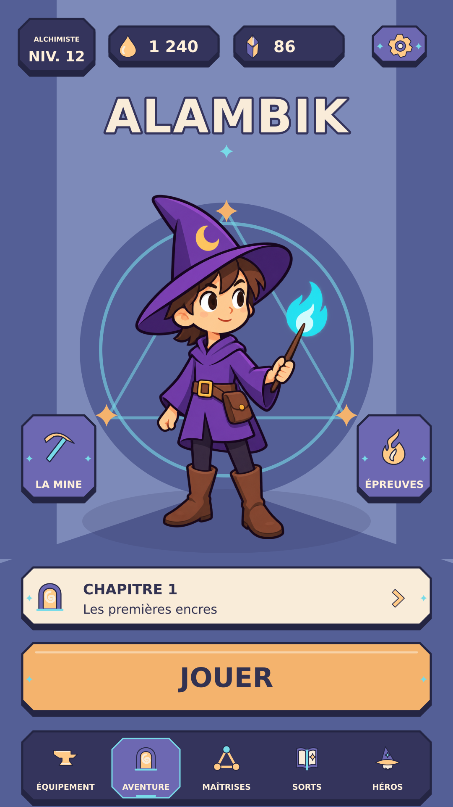

A–C : propositions cartoon. D–F : inspirations du dossier Nourriture pour IA.Menus et planches 1080 × 1920. Icônes et surfaces SVG indépendantes.

Planche des éléments · Planche SVG · Menu 1080 × 1920




